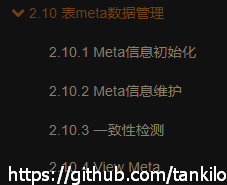
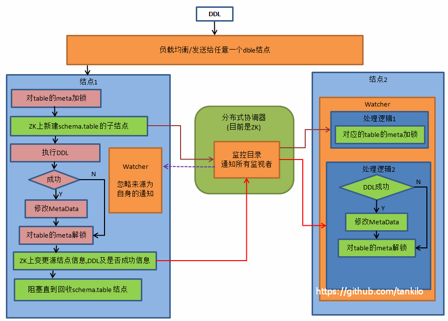
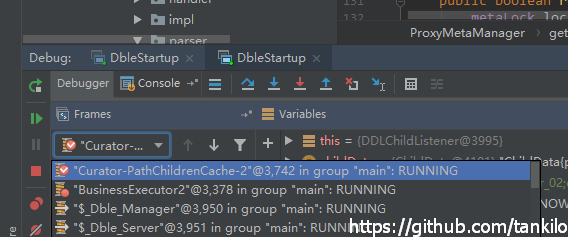
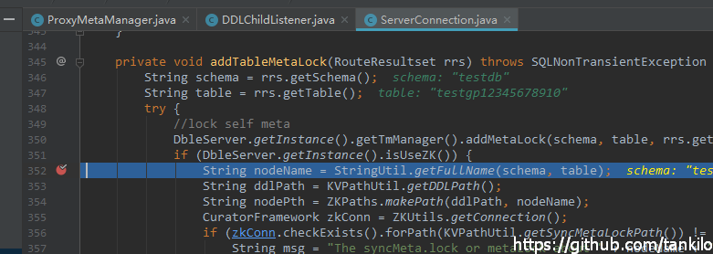
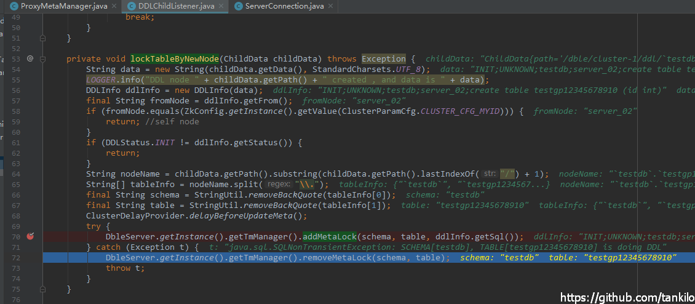
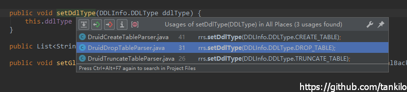

DBLE元数据代码原理解析
DBLE 官方文档
2.10 meta数据管理 
背景介绍
meta数据包括表信息和视图信息，本文只关心表信息。
维护meta数据的意义
之前创建表的时候，只有在表名和schema.xml里配置的逻辑表冲突的时候，sql才能不执行提前返回错误。在schema默认datanode创建表这种情况时，只能走到后端mysql才发现错误。现在内存中有了完整的meta，表名重复都可以提前拦截。
DBLE复杂sql查询的时候，需要metadata。
DBLE的方案
每个dble节点内存中都维护metadata
metadata是每个节点从后端mysql查询解析出来的
分库分表多个表的时候，会做分片一致性校验
有两个层级的锁来使操作相同表的DDL串行执行
1. 单节点时本地锁
内存中本地锁，单进程内每个DDL sql串行去校验锁，锁本身是按照表的粒度组织的
2. 多节点时zk节点互斥
在本地锁上新增一层 zk中的互斥锁，执行DDL前选获取本地锁，再检查zk中的节点，保证操作相同表的DDL在多个dble节点之间串行执行。DDL执行成功后还要通知其他节点更新各自维护的metadata。
详细流程
以zk多节点为例，按照程序执行的顺序来介绍。
 上面的图来自于官方文档 2.8.4 状态同步 A.DDL
初始化
代码入口 com.actiontech.dble.meta.ProxyMetaManager#metaZKinit
1. 阻止其他节点再执行DDL
一直尝试去创建临时节点KVPathUtil.getSyncMetaLockPath()，直到成功,zk路径值例如/dble/cluster-1/lock/syncMeta.lock。这个节点如果添加成功，会阻止其他dble节点开始执行DDL。
2. 等待执行中的DDL完成
等待 KVPathUtil.getDDLPath()，zk路径例如/dble/cluster-1/ddl下 没有子节点，这步是等待所有正在执行中的DDL 执行完成。
3. 从后端mysql查询表信息，包括配置的逻辑表和默认datanode的单表
接下来调用ProxyMetaManager#initMeta，单节点的时候是直接调用这个方法，不走上面的逻辑。
ProxyMetaManager#initMeta
com.actiontech.dble.meta.table.SchemaMetaHandler里有两套逻辑 默认是走新的重构过的逻辑。
老的逻辑是每个表一个sql去查，如果表多了，因为异步执行，开始就把连接池耗尽了。
新的逻辑是每个datanode上表的信息汇总一下，每个datanode上的表信息批量去查(多个show create table拼接)，减少连接消耗数。
最终加载的表信息存储在com.actiontech.dble.meta.ProxyMetaManager#catalogs成员中
信号量释放流程
总任务入口SchemaMetaHandler
每个逻辑库一个任务 MultiTablesMetaHandler，一共schemaNumber个
默认路由上非逻辑表的物理表对应一个任务 任务数量singleTableCnt总是1
任务执行完调用MultiTablesMetaHandler#countDownSingleTable
singleTableCnt=0的时候，调用MultiTablesMetaHandler#countDown
按datanode分库 分组的物理表 shardTableCnt是datanode分库数量
每个datanode分库一个任务 执行完将shardTableCnt减一
最后一个人shardTableCnt=0的时候，去调MultiTablesMetaHandler#countDown
上面两个子任务里面 最后的那个在调MultiTablesMetaHandler#countDown的时候
当shardTableCnt singleTableCnt都为0的话
会去调用SchemaMetaHandler#countDown
这个逻辑库任务就完成了
最后一个逻辑库的子任务 调用SchemaMetaHandler#countDown 发现schemaNumber=0的时候，会调用 allSchemaDone.signal()
这样SchemaMetaHandler#execute allSchemaDone.await() 阻塞解除 全体任务完成
4. 继续准备一些zk上的信息
创建online临时节点 在KVPathUtil#getOnlinePath路径下创建临时节点，, znode路径是/dble/{clusterId}/online/{myid} ZktoXmlMain#loadZktoFile里面注册的OfflineStatusListener，会对这个路径进行监听，主要是节点挂掉以后，其他节点会检查宕机节点是否有未完成的DDL，进行一些释放和告警操作。
对KVPathUtil.getDDLPath()注册DDLChildListener DDL当前执行节点在这个类里不做任何操作，其他节点通过这个类来接受远程DDL节点的指令，处理本地锁、更新自己维护的metadata,以及给DDL执行节点 回复操作的结果。
5. 删除KVPathUtil.getSyncMetaLockPath()，其他节点可以继续执行DDL
DDL节点 SQL解析过程中校验表名是否已经存在
com.actiontech.dble.route.parser.druid.impl.ddl.DruidCreateTableParser#visitorParse
String schemaName = schema == null ? null : schema.getName();
SchemaInfo schemaInfo = SchemaUtil.getSchemaInfo(sc.getUser(), schemaName, createStmt.getTableSource());
StructureMeta.TableMeta tableMeta = DbleServer.getInstance().getTmManager().getSyncTableMeta(schemaInfo.getSchema(), schemaInfo.getTable());
if (tableMeta != null && !createStmt.isIfNotExiists()) {
String msg = "Table '" + schemaInfo.getSchema() + "." + schemaInfo.getTable() + "' or table meta already exists";
throw new SQLException(msg, "42S01", ErrorCode.ER_TABLE_EXISTS_ERROR);
}
DDL节点 执行前校验锁
com.actiontech.dble.server.ServerConnection#routeEndExecuteSQL
com.actiontech.dble.server.ServerConnection#addTableMetaLock
先调用ProxyMetaManager#addMetaLock尝试获取本地锁，锁粒度是table。
如果获取失败，表示本进程内有其他DDL在更新相同的表，那么直接报错结束。
如果获取成功，本进程内没有冲突，继续检查，如果zk上 KVPathUtil.getSyncMetaLockPath()（/dble/cluster-1/lock/syncMeta.lock）路径存在 或者 /dble/{clusterId}/ddl/{目标库}.{目标表}路径存在，都直接提前报错返回。
注意，如果没dble节点初始化，但是两个不同的节点DDL都来这里检查，是可以通过校验的，但是后面创建zk节点的时候，其中一个还是会失败，所以不会有问题。
通过校验以后，调用ProxyMetaManager#notifyClusterDDL,在zk上创建/dble/{clusterId}/ddl/{目标库}.{目标表}路径，内容是com.actiontech.dble.config.loader.zkprocess.zookeeper.process.DDLInfo#toString,其中DDLInfo#status是DDLStatus#INIT
其他节点 DDLChildListener监听到zk上/dble/{clusterId}/ddl/{目标库}.{目标表}节点的创建
com.actiontech.dble.meta.DDLChildListener#lockTableByNewNode
会调用ProxyMetaManager#addMetaLock去加本地锁。
这里加本地锁可能会出现失败，因为在瞬间可能有操作相同表的DDL在执行前校验锁，并且已经获取到本地锁了，正准备校验dble初始化锁和ddl path锁。这时候DDLChildListener#lockTableByNewNode加本地锁就会失败。不过从DDL执行上来说，ddl path的锁还是可以保证其他ddl无法执行。   
DDL节点 DDL执行成功或者失败时 调用NonBlockingSession#handleSpecial
这里是很核心的逻辑，DDL执行失败，DDL节点需要通知其他节点释放锁，如果DDL执行成功后，DDL节点还需要更新自己维护的metadata信息和通知其他节点更新内存信息。
com.actiontech.dble.meta.ProxyMetaManager#updateMetaData 首先这里会区分下DDL的类型，存储在com.actiontech.dble.route.RouteResultset#ddlType，目前只有CREATE,DROP和TRUNCATE三种类型有设置。 
CREATE TABLE
- 如果DDL执行成功，执行DDLNotifyTableMetaHandler将对应表的metadata更新到内存中
调用ProxyMetaManager#notifyResponseClusterDDL，zk场景是ProxyMetaManager#notifyResponseZKDdl
(1)先自己创建临时节点，路径是/dble/{clusterId}/ddl/目标库.目标表/instance/{myid}
(2)(仅限于DDL节点))更新/dble/{clusterId}/ddl/{目标库}.{目标表}节点内容，主要是DDLInfo#status会从INIT变成SUCCESS或者FAILED
(3)(仅限于DDL节点)然后间隔循环检查其他节点是否都在/dble/{clusterId}/ddl/目标库.目标表/instance/创建了各自的myid节点，所有在线节点全部成功创建子节点后，方法返回List<String> preparedList = zkConn.getChildren().forPath(instancePath); List<String> onlineList = zkConn.getChildren().forPath(KVPathUtil.getOnlinePath()); if (preparedList.size() >= onlineList.size()) {这里比较是大于等于，因为可能拿到preparedList后，有的节点就不幸宕机了。
释放本地锁
DROP TABLE
和CREATE TABLE操作步骤类似，不同的地方就是第一步维护meta信息的时候是删除操作而已。
TRUNCATE TABLE
和建表删表相比，没有维护自己metadata的操作，直接2,3两步
其他类型
和建表步骤类似，这两个分开来其实是有重复代码了，差别就是建表的时候多了一个消除缺少表告警的操作。 com.actiontech.dble.meta.ProxyMetaManager#createTable com.actiontech.dble.meta.ProxyMetaManager#genTableMetaByShow
其他节点 DDLChildListener监听到/dble/{clusterId}/ddl/{目标库}.{目标表}路径的内容更新
com.actiontech.dble.meta.DDLChildListener#updateMeta
远程节点DDL执行失败，直接释放本地锁 并且 调用
ProxyMetaManager#notifyResponseClusterDDL在/dble/{clusterId}/ddl/目标库.目标表/instance/创建自己的myid 临时节点远程DDL节点执行成功的时候和 上面DDL节点的操作类似
DDL节点宕机 其他节点触发OfflineStatusListener
监听/dble/{clusterId}/online/{myid}临时节点被删除
com.actiontech.dble.server.OfflineStatusListener#releaseForDDL
检查KVPathUtil.getDDLPath()，例如/dble/cluster-1/ddl下的子节点，是否有监听器里通知的宕机节点未执行完成的DDL。
如果DDLInfo#getStatus是DDLStatus.INIT,那么当前节点释放本地锁。
如果DDLInfo#getStatus不是DDLStatus.INIT，那么其他节点在ddl path下的子节点更新的时候已经触发DDLChildListener#updateMeta,释放过本地锁了。
但是不管怎样，ddl path下的子节点还是存在，会组织其他节点对相同的表执行DDL，还会在ProxyMetaManager#metaZKinit阻止后续节点启动。
宕机节点里日志有个告警2019-03-08 20:21:46,985 [WARN ][Curator-PathChildrenCache-0] service instance[server_01] has crashed.Please manually check ddl status on every data node and delete ddl node [/dble/cluster-1/ddl/`testdb`.`testpppppp`] from zookeeper after every instance received this message (com.actiontech.dble.server.OfflineStatusListener:OfflineStatusListener.java:79)所以在这种情况下，需要手动删除ddl path下的子节点。
个人感觉流程是这样的，宕机节点执行DDL后会报错。mysql> alter table testpppppp add name3 char; ERROR 2013 (HY000): Lost connection to MySQL server during query重新执行，转发到其他节点后，会告诉你冲突的节点。
mysql> alter table testpppppp add name3 char; ERROR 1064 (HY000): java.lang.Exception: The syncMeta.lock or metaLock about `testdb`.`testpppppp` in /dble/cluster-1/ddlis Exists,sql:alter table testpppppp add name3 char这里感觉还是有点麻烦的，要去zk自己判断下数据。 在
/dble/{clusterId}/online/{myid}不在线的节点，ddl path下的子节点都可以删除掉。
是不是可以弄个释放metalock锁的命令？com.actiontech.dble.server.OfflineStatusListener#releaseForBinlog还不理解功能
后台metadata一致性检查线程
com.actiontech.dble.meta.ProxyMetaManager#tableStructureCheck com.actiontech.dble.meta.table.TablesMetaCheckHandler 会检查内存中的metadata是否和物理库不一致，并进行告警。 具体见2.10.3 一致性检测
辅助命令1 ReloadMetaData
Reload metadata of tables or specified table
reload @@metadata [where schema=? [and table=?] | where table in ('schema1'.'table1',...)]
如果执行DDL的结点故障下线，其他结点会侦听到此消息，保证解开对应结点的tablemeta锁，并记录故障告警（如果配置了告警通道），需要运维人工介入修改ZK对应ddl结点的状态，检查各个结点meta数据状态，可能需要reload metadata。
辅助命令2 CheckFullMetaData
用于检查meta信息是否存在以及加载的时间。
详见dble文档 2.1.17 check @@metadata 命令